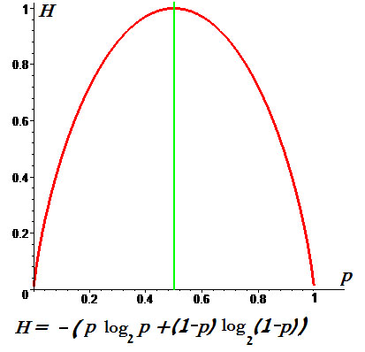
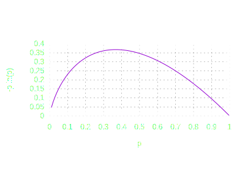

Этот раздел посвящен понятию энтропии в контексте информации, её концепции. Это понятие важно для дальнейшего изучения кодировани информации и методов передачи данных.
1. Понятие энтропии
Прежде всего, стоит договориться, что мы будем понимать под энтропией.
Энтропия является основным понятием в теории информации, которое количественно описывает неопределенность или случайность в наборе данных. В контексте информации энтропия измеряет среднее количество информации, которое содержится в сообщениях, выбираемых из множества возможных сообщений.
Формула Шеннона позволяет найти энтропию H(x) дискретного случайного процесса X:
Формула Шеннона для расчета энтропии

Здесь H(x) - сама энтропия (в битах),
X - собственно, случайный процесс,
p(xi) - вероятность появления события xi.
Стоит упомянуть, что основание логарифма может быть отлично от двух (в силу существования натов, тритов и дитов, но это другая история!)
Ниже приведен график зависимости энтропии от вероятности событий. Энтропия максимальна в случае, когда события равновероятны.

Чем (не)вероятнее событие, тем меньше энтропии оно в себе содержит.
2. Мера информации: Шенноновская энтропия
Шенноновская энтропия. Под этим понятием будем понимать меру информации, предложенную Клодом Шенноном, которая позволяет оценить количество информации, необходимое для кодирования сообщений.
Шенноновская энтропия обладает следующими свойствами:
-
Непрерывность: если вероятность события уменьшается, то энтропия увеличивается.
-
Аддитивность: если два события независимы, то общая энтропия равна сумме их энтропий.
-
Максимизация: энтропия максимальна при равновероятных событиях.
Можно привести простой пример с монеткой. Если монета честная, то вероятность выпадения орла или решки равна 0.5. В таком случае энтропия будет равна 1 бит. Можете проверить по формуле!
Ниже приведен еще один график энтропии в зависимости от вероятности события, но тут распределение чуть менее равномерное.

3. Избыточность и её роль в кодировании
Сначала нам нужно определить избыточность. Итак...
Избыточность
Избыточность есть превышение количества информации для передачи или хранения сообщения над его информационной энтропией.
Зачем вообще нужна избыточность? С одной стороны, избыточность может быть полезной для исправления ошибок при передаче данных (об этом позже). С другой же стороны, слишком высокая избыточность может привести к неэффективному использованию ресурсов, например, увеличению объема передаваемой информации.
Приведем пример. Если сообщение состоит из 100 символов, и 10 из них - пробелы, то избыточность будет составлять 10%. Пробелы же лишняя информация, да?..
Еще один пример! Представьте, что вы заказали фарфоровую вазу в онлайн-магазине "Дикие ягодки". Эта ваза - информация, которую вы должны получить. Добавим избыточности к этой информации: еще пара коробок, километр противоударной пленки... Избыточно, зато надежно! Теперь никакой шум в процессе доставки до вас информации в виде недобросовестных работников службы доставки, поврежденного транспорта или плохой погоды не повредит вашу информацию, вы получите её в целости и сохранности, в том виде, в котором и должны были получить. Всё проще, чем кажется!
 Следующая страница
Следующая страница